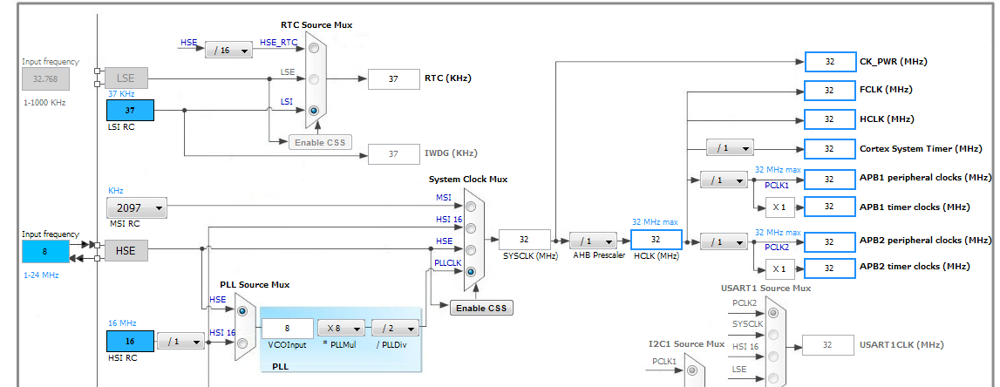
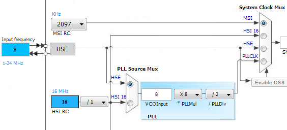
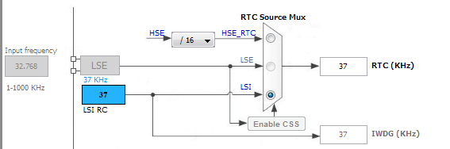

stm32L0x1的时钟分类

先给大家推荐一个软件STM32CubeMX，上面的那张关于时钟的图就是从这个软件中截图得来的，这个软件还可以查看配置的时钟情况以及时钟树，挺方便的。
从图上，可以看出，STM32的始终源一共有HSE、HSI、LSE、LSI、MSI、PLL六种，
其中
- HSE是外部的高速晶振，可以直接使用或者通过PLL倍频,最终输出不能超过32Mhz
- HSI是内部的高速RC振荡器，频率为16Mhz，可以直接使用或者通过PLL倍频,最终输出不能超过32Mhz
- LSE是外部的低速晶振，可以用于RTC或者IWDG，频率为32.768KH在
- LSI是内部的低速RC振荡器，频率约为37KHz
- MSI是内部的RC振荡器，其频率编程可调
- PLL是一个锁相环，可以将HSE或HSI倍频之后再给系统提供时钟。
其中注意的是，内部时钟的精度都比较差,在对时钟要求比较高的场合,建议使用外部晶振
系统时钟源

从图中可以看到，系统时钟的选择有
- MSI(65.536 kHz, 131.072 kHz, 262.144 kHz, 524.288 kHz, 1.048 MHz,
2.097 MHz (default value) and 4.194 MHz) - HSI(16,16/4)
- HSE(1-24MHz)
- PLLCLK(HSE/HSI倍频锁相环)
其中PLLCLK是比较常用的一种，可以将HSE或HSI(HSI/4)倍频，然后再给主系统提供时钟。
其计算公式为PLLCLK_OUT = (PLLCLK_SOURCE * PLLMUL / PLLDIV);
例如要给系统提供32MHz的晶振，可以
- HSI(16) * 4(PLLMUL) / 2(PLLDIV)
- HSE(12) * 8(PLLMUL) / 3(PLLDIV)
以上两种方法只是举个例子，倍频的方法并不是固定的。
注意，实际使用中，这四个时钟源只能同时选择一个，不能同时选择多个。
RTC时钟源 IWDG 时钟源

从图中可以看到，IWDG只能使用LSI提供时钟源
而RTC可以使用HSE/32(数据手册上查看得来，软件存在明显错误)、LSE、LSI提供时钟源,其中LSE 的频率为32.768KHz，LSI的频率为37KHz。
具体的RTC和IWDG的工作时钟还要进行分频。
RTC的工作时钟的计算方法为：Fck_spre = Frtcclk/(PREDIV_S+1)/(PREDIV_A+1);
例如Frtcclk(时钟源频率)为32.768Khz的LSE，PREDIV_S = 3， PREDIV_A =3,则Fck_spre(工作频率) = 32.768/(3+1)/(3+1) = 2.048KHz